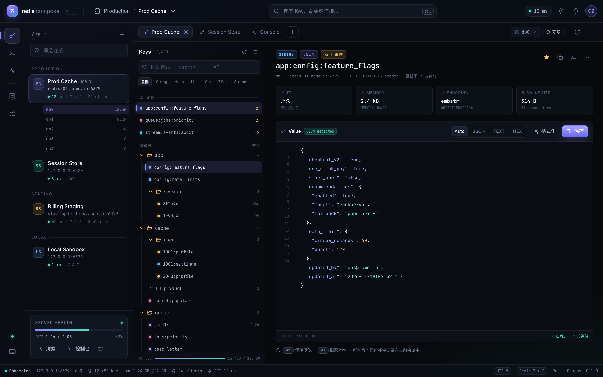

重新设计的桌面体验：以连接为上下文，以 Key 为焦点。更少的边框、更清晰的信息层级，以及为日常运维准备的控制台与洞察视图。所有界面都可以直接用 Compose 实现。

连接 → 数据库 → Key → 值，四级信息始终可见。用留白与层级代替边框堆叠，让注意力停在内容上。
⌘K 命令面板、⌘F 键搜索、N 新建、↑↓ 历史。所有高频动作都可以不离开键盘完成。
只读模式、危险命令确认、加密存储与值遮罩都有明确入口。风险状态用颜色与文字双重表达。
数据类型使用固定的语义色，TTL 用倒计时与进度表达，连接状态同时用颜色和延迟数字说明。
渐变只用于品牌与主操作，动效只用于反馈。深色界面保持接近真实的黑，避免整屏发光。
所有颜色、圆角、间距、字号都能映射到 Compose Theme 与组件。无图片依赖，图标为统一线性 SVG。